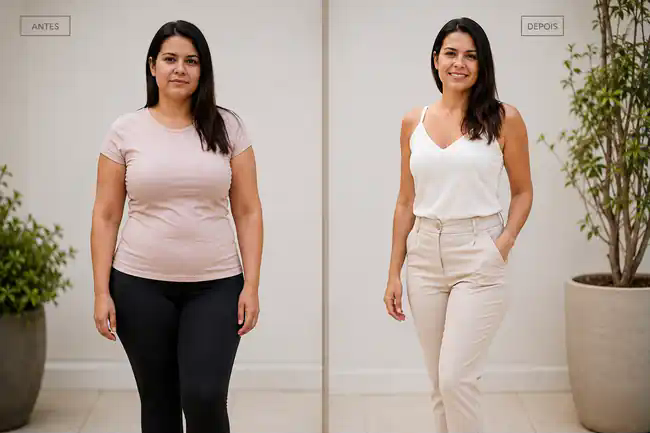

01
Rotina corrida
Quando tudo depende de academia, receita complicada e horário perfeito, qualquer imprevisto vira motivo para desistir.
Um plano simples para mulheres adultas que querem caminhar com estratégia, comer melhor sem sofrimento e voltar a sentir o corpo mais leve, firme e confiante — sem academia obrigatória e sem dieta radical.
Resultados variam. O programa é educativo e não substitui orientação médica ou nutricional individual.
Cintura mais definida, roupas vestindo melhor, mais disposição e a sensação de estar cuidando de si de novo. Não se trata de buscar um corpo perfeito — e sim de visualizar para onde uma rotina consistente pode levar.

O 3•3•21 foi desenhado para criar uma ponte entre intenção e execução: movimento possível, refeições mais saciantes e um jeito de voltar ao plano sem jogar a semana fora.
Quando tudo depende de academia, receita complicada e horário perfeito, qualquer imprevisto vira motivo para desistir.
O método trabalha estrutura de refeições, saciedade e decisões simples para diminuir o improviso.
Uma refeição fora do plano não precisa apagar a semana. Você aprende a retornar na próxima decisão.
O programa combina caminhada intervalada adaptada, refeições com foco em saciedade e um sistema de retorno rápido quando a rotina sair dos trilhos.
Blocos alternados de caminhada mais forte e mais leve, com progressão para iniciantes. Inspirado no Interval Walking Training estudado no Japão.
Proteína, fibras, vegetais e alimentos comuns organizados de forma simples. Sem transformar arroz, feijão, pão ou fruta em inimigos.
Saiu do plano? Você tem três portas de volta: movimento, próxima refeição e reorganização das próximas horas.
Em vez de tentar mudar tudo no primeiro dia, o programa aumenta a exigência aos poucos e trabalha constância.
Você pode começar sozinha — ou convidar uma amiga para caminhar, trocar ideias de refeições e ter alguém para mandar aquele “vamos hoje?”. O método não exige grupo nem comunidade; a companhia é uma forma opcional de tornar o processo mais leve.
Método, caminhada, alimentação, vida real, 21 dias, 30 receitas, módulo 40+ e continuidade.
Registro diário, revisões nos dias 7, 14 e 21 e plano dos próximos 30 dias.
Lista de compras, trocas, SOS doce, comer fora, refeições de emergência e 3 Resgates.
O objetivo não é comer folhas o dia inteiro. O método ensina a organizar refeições que sustentam melhor e a trabalhar escolhas que fazem sentido no mundo real.
O programa foi criado para mulheres adultas em geral. O módulo Mulher 40+ é um conteúdo adicional que considera rotina, sono, recuperação, progressão do exercício e situações em que acompanhamento profissional pode ser importante.
Uma rotina estruturada de 21 dias para começar a se movimentar, organizar refeições, trabalhar saciedade, acompanhar medidas e construir consistência.
O que ele não promete:Um número garantido de quilos, redução localizada de gordura ou o mesmo resultado para todas. Peso inicial, saúde, medicamentos, sono, idade, alimentação e adesão influenciam os resultados.
Pacote completo • pagamento único • acesso digital
O checkout seguro será conectado assim que finalizarmos o cadastro na Kiwify.
Não. É voltado para mulheres adultas em geral. O 40+ é um módulo adicional.
Não. A base de movimento é caminhada, com progressão para iniciantes e alternativas em casa.
Não. O programa usa estrutura flexível de refeições e exemplos.
Não existe um número responsável que possa ser garantido para todas.
Sim, se você estiver apta para atividade física. Em caso de condição médica ou sintomas, procure liberação profissional.
O e-book inclui uma estratégia de continuidade para que o desafio não vire apenas outra tentativa curta.